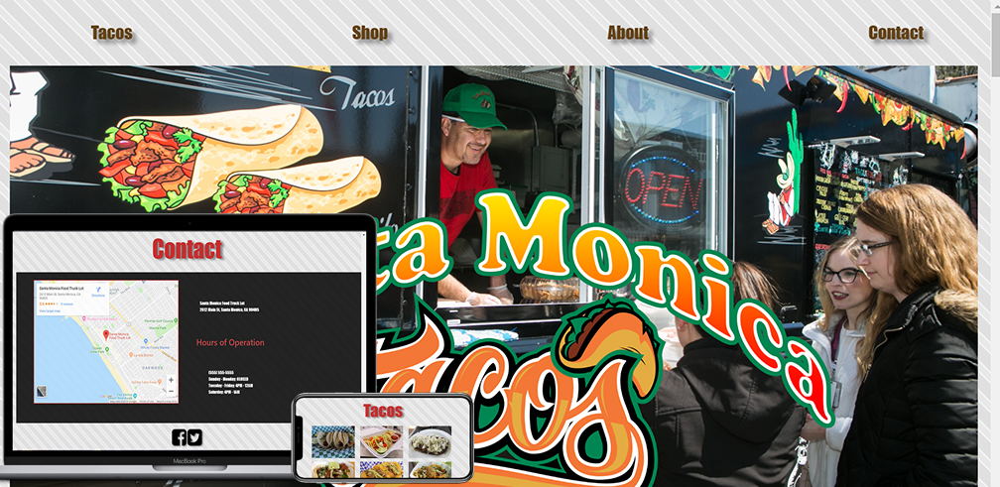
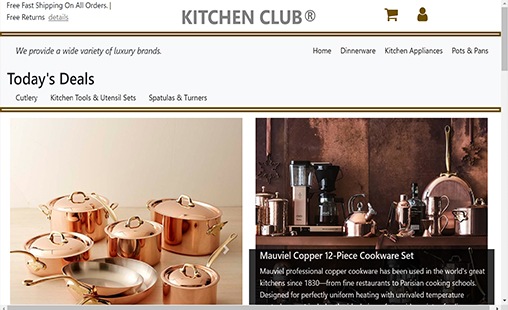
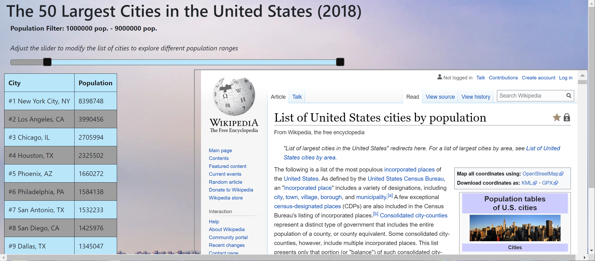

A food truck website project that I created as an initial personal project to learn. Throughout the project I implemented HTML, CSS, JavaScript, jQuery, and Bootstrap. I also used git and gitbash to push all project updates to the remote repo.

This project displays an ecommerce site that I created called Kitchen Club. Images are borrowed from other sites, but the functionality and design is completely my own creative influence.

WeatherTimeApp was a project that I created to explore using API calls and AJAX to update data. In this project the functionailty is used to pull weather information every 15sec. or by requesting updated information based on user interaction.

With this project I wanted to challenge myself by exploring how to create a range slider in JavaScript and jQuery, but I also wanted it to be useful. I also wanted to provide a table that updates in realtime based off the sliders range. I then provided the data source along with some aesthetics using CSS.